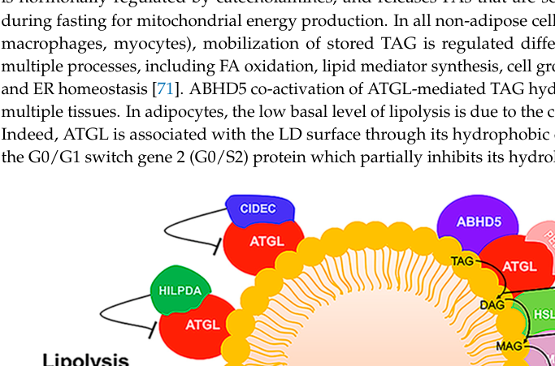

Neutral lipid storage disease with myopathy (NLSDM) is an autosomal recessive neutral lipid storage disorder caused by biallelic PNPLA2 variants encoding adipose triglyceride lipase (ATGL). ATGL deficiency impairs intracellular triacylglycerol hydrolysis, causing cytoplasmic triacylglycerol droplet accumulation predominantly in skeletal and cardiac muscle, producing a progressive lipid-storage myopathy (often with early, asymmetric upper-limb weakness), cardiomyopathy, and hyperCKemia, without ichthyosis. It corresponds to NLSD type M and overlaps triglyceride storage disease type 2.
Ask a research question about Neutral Lipid Storage Myopathy. OpenScientist will conduct autonomous deep research using the Disorder Mechanisms Knowledge Base and PubMed literature (typically 10-30 minutes).
Do not include personal health information in your question. Questions and results are cached in your browser's local storage.
Conditions with similar clinical presentations that must be differentiated from Neutral Lipid Storage Myopathy:
name: Neutral Lipid Storage Myopathy
creation_date: "2026-06-13T00:00:00Z"
description: >-
Neutral lipid storage disease with myopathy (NLSDM) is an autosomal recessive neutral lipid
storage disorder caused by biallelic PNPLA2 variants encoding adipose triglyceride lipase
(ATGL). ATGL deficiency impairs intracellular triacylglycerol hydrolysis, causing cytoplasmic
triacylglycerol droplet accumulation predominantly in skeletal and cardiac muscle, producing
a progressive lipid-storage myopathy (often with early, asymmetric upper-limb weakness),
cardiomyopathy, and hyperCKemia, without ichthyosis. It corresponds to NLSD type M and
overlaps triglyceride storage disease type 2.
synonyms:
- NLSDM
- NLSD type M
- ATGL deficiency myopathy
- Jordans' anomaly with myopathy
category: Mendelian
disease_term:
preferred_term: neutral lipid storage myopathy
term:
id: MONDO:0012545
label: neutral lipid storage myopathy
mappings:
mondo_mappings:
- term:
id: MONDO:0012545
label: neutral lipid storage myopathy
mapping_predicate: skos:exactMatch
mapping_source: MONDO
parents:
- Neutral Lipid Storage Disease
inheritance:
- name: Autosomal recessive
inheritance_term:
preferred_term: Autosomal recessive inheritance
term:
id: HP:0000007
label: Autosomal recessive inheritance
evidence:
- reference: PMID:31655616
reference_title: "Neutral lipid storage disease with myopathy in China: a large multicentric cohort study."
supports: SUPPORT
evidence_source: HUMAN_CLINICAL
snippet: "Thirty-three families were carrying homozygous mutations, while\nseven families were carrying compound heterozygous mutations"
explanation: Biallelic (homozygous/compound heterozygous) PNPLA2 inheritance is consistent with autosomal recessive transmission.
pathophysiology:
- name: PNPLA2/ATGL Deficiency
description: >-
Biallelic PNPLA2 variants reduce adipose triglyceride lipase (ATGL), the rate-limiting
enzyme for intracellular triacylglycerol hydrolysis.
gene:
preferred_term: PNPLA2
term:
id: hgnc:30802
label: PNPLA2
biological_processes:
- preferred_term: triglyceride catabolic process
term:
id: GO:0019433
label: triglyceride catabolic process
modifier: DECREASED
evidence:
- reference: PMID:31655616
reference_title: "Neutral lipid storage disease with myopathy in China: a large multicentric cohort study."
supports: SUPPORT
evidence_source: HUMAN_CLINICAL
snippet: "Neutral lipid storage disease with myopathy (NLSDM) is a rare\nclinical heterogeneous disorder caused by mutations in the patatin-like\nphospholipase domain-containing 2 (PNPLA2) gene"
explanation: NLSDM is caused by PNPLA2 (ATGL) mutations impairing triacylglycerol hydrolysis.
downstream:
- target: Muscle Triacylglycerol Droplet Accumulation
description: Impaired triacylglycerol hydrolysis causes lipid-droplet accumulation in muscle.
- name: Muscle Triacylglycerol Droplet Accumulation
description: >-
Undegraded triacylglycerol accumulates as cytoplasmic lipid droplets in skeletal and
cardiac muscle fibers (and leukocytes, producing Jordans' anomaly), driving myopathy and
cardiomyopathy.
biological_processes:
- preferred_term: lipid storage
term:
id: GO:0019915
label: lipid storage
modifier: INCREASED
cell_types:
- preferred_term: skeletal muscle fiber
term:
id: CL:0000188
label: cell of skeletal muscle
evidence:
- reference: PMID:31655616
reference_title: "Neutral lipid storage disease with myopathy in China: a large multicentric cohort study."
supports: SUPPORT
evidence_source: HUMAN_CLINICAL
snippet: "NLSDM usually presents skeletal\nmyopathy, cardiomyopathy and the multiple organs dysfunction"
explanation: Muscle lipid storage produces skeletal myopathy and cardiomyopathy.
phenotypes:
- name: Myopathy
description: >-
Progressive lipid-storage skeletal myopathy; right upper-limb weakness is often the early
and prominent feature.
phenotype_term:
preferred_term: Myopathy
term:
id: HP:0003198
label: Myopathy
clinical_course: PROGRESSIVE
evidence:
- reference: PMID:31655616
reference_title: "Neutral lipid storage disease with myopathy in China: a large multicentric cohort study."
supports: SUPPORT
evidence_source: HUMAN_CLINICAL
snippet: "NLSDM usually presents skeletal\nmyopathy, cardiomyopathy and the multiple organs dysfunction"
explanation: Skeletal myopathy is the cardinal feature of NLSDM.
- name: Upper limb muscle weakness
description: Asymmetric, often right-predominant upper-limb weakness as an early prominent feature.
phenotype_term:
preferred_term: Upper limb muscle weakness
term:
id: HP:0003484
label: Upper limb muscle weakness
evidence:
- reference: PMID:31655616
reference_title: "Neutral lipid storage disease with myopathy in China: a large multicentric cohort study."
supports: SUPPORT
evidence_source: HUMAN_CLINICAL
snippet: "Right upper limb weakness was the early and\nprominent feature in 61.5% of patients"
explanation: Right upper-limb weakness is a distinctive early feature of NLSDM.
- name: Cardiomyopathy
description: Cardiac muscle involvement; pure or combined cardiomyopathy occurs in many patients.
phenotype_term:
preferred_term: Cardiomyopathy
term:
id: HP:0001638
label: Cardiomyopathy
evidence:
- reference: PMID:31655616
reference_title: "Neutral lipid storage disease with myopathy in China: a large multicentric cohort study."
supports: SUPPORT
evidence_source: HUMAN_CLINICAL
snippet: "the combination of skeletal myopathy and cardiomyopathy (21/45)"
explanation: Cardiomyopathy, alone or combined with skeletal myopathy, is common in NLSDM.
- reference: PMID:28499397
supports: SUPPORT
evidence_source: HUMAN_CLINICAL
snippet: "one patient with NLSD-M was\nimplanted with a cardioverter defibrillator for severe arrhythmias"
explanation: Severe arrhythmia requiring a cardioverter defibrillator illustrates the cardiac involvement of NLSDM.
- name: Muscle fatty infiltration
description: >-
Selective fatty infiltration of muscle (posterior compartment of the legs) is a
characteristic muscle-imaging finding.
phenotype_term:
preferred_term: Fatty replacement of skeletal muscle
term:
id: HP:0012548
label: Fatty replacement of skeletal muscle
evidence:
- reference: PMID:31655616
reference_title: "Neutral lipid storage disease with myopathy in China: a large multicentric cohort study."
supports: SUPPORT
evidence_source: HUMAN_CLINICAL
snippet: "Selective muscle fatty infiltration on posterior compartment of\nlegs"
explanation: Selective muscle fatty infiltration is the characteristic muscle-MRI finding in NLSDM.
- name: Skeletal muscle atrophy
description: >-
Skeletal muscle atrophy accompanies the progressive lipid-storage myopathy (NLSD cohorts;
full-text frequency data).
phenotype_term:
preferred_term: Skeletal muscle atrophy
term:
id: HP:0003202
label: Skeletal muscle atrophy
- name: Fatigue
description: >-
Exercise intolerance/fatigue is commonly reported in NLSDM (full-text cohort data).
phenotype_term:
preferred_term: Fatigue
term:
id: HP:0012378
label: Fatigue
biochemical:
- name: HyperCKemia
presence: INCREASED
context: >-
Elevated serum creatine kinase (hyperCKemia) is a common biochemical finding, sometimes
the only manifestation (asymptomatic hyperCKemia).
evidence:
- reference: PMID:31655616
reference_title: "Neutral lipid storage disease with myopathy in China: a large multicentric cohort study."
supports: SUPPORT
evidence_source: HUMAN_CLINICAL
snippet: "asymptomatic hyperCKemia (2/45)"
explanation: HyperCKemia can be the sole presentation of NLSDM.
genetic:
- name: PNPLA2 pathogenic variants
gene_term:
preferred_term: PNPLA2
term:
id: hgnc:30802
label: PNPLA2
association: Causative
notes: >-
Biallelic PNPLA2 variants cause NLSDM; point mutations, deletions, and other variant
classes have been reported across large cohorts.
evidence:
- reference: PMID:31655616
reference_title: "Neutral lipid storage disease with myopathy in China: a large multicentric cohort study."
supports: SUPPORT
evidence_source: HUMAN_CLINICAL
snippet: "A total of 23\nmutations were identified including 11 (47.8%) point mutations, eight (34.8%)\ndeletions"
explanation: A spectrum of PNPLA2 variant classes underlies NLSDM.
differential_diagnoses:
- name: Triglyceride storage disease type 2 (NLSD type M)
description: >-
Triglyceride storage disease type 2 is the same PNPLA2-related NLSD type M; the entries
are essentially synonymous.
disease_term:
preferred_term: triglyceride storage disease, type 2
term:
id: MONDO:0008602
label: triglyceride storage disease, type 2
evidence:
- reference: PMID:31655616
reference_title: "Neutral lipid storage disease with myopathy in China: a large multicentric cohort study."
supports: SUPPORT
evidence_source: HUMAN_CLINICAL
snippet: "Neutral lipid storage disease with myopathy (NLSDM) is a rare\nclinical heterogeneous disorder caused by mutations in the patatin-like\nphospholipase domain-containing 2 (PNPLA2) gene"
explanation: Both denote the PNPLA2-related neutral lipid storage disease with myopathy.
treatments:
- name: Supportive Care
description: Supportive management of myopathy with cardiac surveillance and management.
treatment_term:
preferred_term: supportive care
term:
id: MAXO:0000950
label: supportive care
references:
- reference: PMID:28499397
title: "Neutral Lipid Storage Diseases: clinical/genetic features and natural history in a large cohort of Italian patients."
Neutral lipid storage myopathy (commonly referred to as neutral lipid storage disease with myopathy; NLSDM/NLSD‑M) is a rare autosomal recessive lipid droplet disorder caused by biallelic PNPLA2 (ATGL) loss-of-function leading to impaired intracellular triglyceride hydrolysis, accumulation of neutral lipids in multiple tissues, and progressive skeletal myopathy frequently complicated by cardiomyopathy. Cohort studies show marked phenotypic heterogeneity, long diagnostic delays, and a spectrum ranging from isolated hyperCKemia to severe cardiomyopathy. (pennisi2017neutrallipidstorage pages 1-2, zhang2019neutrallipidstorage pages 1-2, missaglia2019neutrallipidstorage pages 3-6, pennisi2017neutrallipidstorage pages 2-3)
A compact curation-ready summary table is provided below.
| Knowledge-base field | Summary | Best supporting citations |
|---|---|---|
| Disease name / synonyms | Neutral lipid storage myopathy; neutral lipid storage disease with myopathy; NLSDM; NLSD-M; NLSM | (pennisi2017neutrallipidstorage pages 1-2, wang2024dilatedcardiomyopathycaused pages 1-2, landim2023neutrallipidstorage pages 1-2) |
| Key identifiers | MONDO: MONDO_0012545; OMIM/MIM: #610717 | (OpenTargets Search: Neutral lipid storage myopathy, wang2024dilatedcardiomyopathycaused pages 1-2) |
| Causal gene | PNPLA2 encodes adipose triglyceride lipase (ATGL), the rate-limiting intracellular triglyceride lipase | (missaglia2019neutrallipidstorage pages 3-6, wang2024dilatedcardiomyopathycaused pages 2-4) |
| Inheritance | Autosomal recessive; affected individuals typically have biallelic PNPLA2 variants, while heterozygous relatives may be unaffected | (landim2023neutrallipidstorage pages 1-2, wang2024dilatedcardiomyopathycaused pages 2-4) |
| Core pathobiology | Defective ATGL-mediated TAG hydrolysis causes cytosolic lipid-droplet accumulation in skeletal muscle, heart, and other tissues, with downstream lipotoxicity, impaired FA signaling/PPARα activation, and mitochondrial dysfunction | (kanti2022adiposetriglyceridelipase–mediated pages 1-2, wang2024dilatedcardiomyopathycaused pages 2-4, missaglia2019neutrallipidstorage pages 1-3) |
| Typical onset | Usually adult onset around the 3rd–4th decade / early 30s, but onset can range from childhood to late adulthood; asymptomatic hyperCKemia may precede weakness | (landim2023neutrallipidstorage pages 1-2, zhang2019neutrallipidstorage pages 1-2, pennisi2017neutrallipidstorage pages 2-3) |
| Major skeletal-muscle phenotype | Progressive proximal-predominant weakness and atrophy; fatigue in 100% and myalgia/cramps in 50% in one Italian cohort; distal muscles often involved later | (pennisi2017neutrallipidstorage pages 2-3, pennisi2017neutrallipidstorage pages 5-7) |
| Cardiac involvement | Cardiomyopathy in ~40% of 55 reported patients in one review; 40%–50% cited in recent review; Chinese cohort: pure cardiomyopathy 4/45 (8.9%), combined skeletal + cardiomyopathy 21/45 (46.7%) | (missaglia2019neutrallipidstorage pages 3-6, wang2024dilatedcardiomyopathycaused pages 1-2, zhang2019neutrallipidstorage pages 1-2) |
| Other systemic features | Hepatomegaly/liver involvement ~20% in one review; mild hyperglycemia 4/15 and triglyceride abnormalities 2/15 in Italian cohort; hearing loss, cataract, diabetes can occur in subsets | (missaglia2019neutrallipidstorage pages 3-6, pennisi2017neutrallipidstorage pages 2-3, faedo2026casereporta pages 1-2) |
| Typical phenotype distribution | Chinese multicenter cohort (n=45): asymptomatic hyperCKemia 2/45 (4.4%), pure skeletal myopathy 18/45 (40.0%), pure cardiomyopathy 4/45 (8.9%), combined skeletal + cardiomyopathy 21/45 (46.7%) | (zhang2019neutrallipidstorage pages 1-2) |
| Hallmark laboratory clue | Jordan anomaly (lipid vacuoles/droplets in leukocytes) is a hallmark and was present in 100% of tested patients in the Italian cohort | (landim2023neutrallipidstorage pages 1-2, pennisi2017neutrallipidstorage pages 2-3, pennisi2017neutrallipidstorage pages 5-7) |
| Serum CK | Usually elevated; Italian cohort range 300–5700 U/L with average ~1000 U/L; hyperCKemia may be isolated early | (pennisi2017neutrallipidstorage pages 2-3, zhang2019neutrallipidstorage pages 1-2) |
| Electrophysiology | EMG commonly shows myogenic changes; myotonic discharges were seen in 5/15 NLSD-M patients in the Italian cohort | (pennisi2017neutrallipidstorage pages 7-8, luan2025clinicopathologicalgeneticfeaturesof pages 1-2) |
| Imaging pattern | Muscle MRI often shows asymmetric fatty infiltration, especially posterior thigh/calf muscles; severe involvement of long head of biceps femoris, semimembranosus, adductor magnus, soleus, medial gastrocnemius; right upper limb weakness can be an early clue (61.5%) | (zhang2019neutrallipidstorage pages 1-2, zhang2019neutrallipidstorage pages 6-9) |
| Biopsy / pathology | Lipid-droplet accumulation in myofibers (Oil Red O positive), often with rimmed vacuoles; 93% of NLSD-M muscle biopsies showed lipid droplets in one cohort; preferential type 1 fiber involvement reported | (pennisi2017neutrallipidstorage pages 7-8, zhang2019neutrallipidstorage pages 6-9, luan2025clinicopathologicalgeneticfeaturesof pages 1-2) |
| Common variant classes | Truncating, frameshift, nonsense, splice-site, insertions/deletions, and missense variants; among 39 reported variants, 25/39 (64%) were truncating and 13/39 (33%) missense in one review | (missaglia2019neutrallipidstorage pages 3-6, wang2024dilatedcardiomyopathycaused pages 5-6) |
| Recurrent / hotspot variants | Recurrent hotspot c.757+1G>T; Chinese cohort allele frequencies: c.757+1G>T 24/80 (30.0%), c.245G>A 9/80 (11.3%), c.187+1G>A 8/80 (10.0%); variants often cluster in exons 4–7 / C-terminal region | (zhang2019neutrallipidstorage pages 1-2, wang2024dilatedcardiomyopathycaused pages 5-6, zhang2019neutrallipidstorage pages 6-9) |
| Reported case burden | Literature estimates have risen over time: ~55 genetically characterized patients (2019 review), nearly 130 reported patients / >60 PNPLA2 mutations (2024 review), and 132 patients with 72 PNPLA2 variants in a 2026 case review | (missaglia2019neutrallipidstorage pages 3-6, wang2024dilatedcardiomyopathycaused pages 1-2, faedo2026casereporta pages 1-2) |
| Natural history / prognosis | Chronic progressive disease with long diagnostic delay (mean 16.75 years in Italian cohort); after median 30.6 years of disease, 5/21 lost independent ambulation; some patients remain without cardiac disease while others develop severe cardiomyopathy | (pennisi2017neutrallipidstorage pages 2-3, missaglia2022neutrallipidstorage pages 1-2) |
| Standard management | No established curative therapy; supportive care plus low-fat diet and medium-chain triglyceride (MCT) supplementation are commonly used; benefit appears variable | (risi2025primarylipidmyopathiesa pages 16-18, missaglia2022neutrallipidstorage pages 1-2) |
| Reported dietary response | In one 10-year follow-up, low-fat + MCT reduced CPK but did not halt progression; a 2024 case report abstract reported improved limb strength and resolution of dysarthria after a medium-chain fatty acids diet | (missaglia2022neutrallipidstorage pages 1-2, NCT01527318 chunk 1) |
| Targeted / experimental therapy | PPAR agonist strategy: bezafibrate explored based on ATGL/PPAR biology; tricaprin/CNT-01 and CNT-02 studied mainly in TGCV/ATGL-defect spectrum rather than routine NLSDM care | (kanti2022adiposetriglyceridelipase–mediated pages 1-2, NCT01527318 chunk 1) |
| Key clinical trials / registries | NCT01527318: bezafibrate in NLSDM, completed, phase 4, planned enrollment 6; NCT02830763: CNT-02 safety for TGCV and NLSD-M, terminated, enrollment 2; NCT02918032: international NLSD/TGCV registry, recruiting, target 120 | (NCT01527318 chunk 1) |
Table: This table condenses the main knowledge-base fields for Neutral Lipid Storage Myopathy, including identifiers, genetics, hallmark phenotypes, diagnostics, variant hotspots, and current management/trial information. It is useful as a quick-reference scaffold for structured disease curation.
NLSDM/NLSM is part of the broader group “neutral lipid storage diseases” and is characterized by excessive, non‑lysosomal accumulation of neutral lipids (primarily triacylglycerol) in multiple tissues, with prominent skeletal muscle involvement and common cardiac involvement. (pennisi2017neutrallipidstorage pages 1-2, missaglia2019neutrallipidstorage pages 3-6)
A key diagnostic hallmark is Jordan anomaly (lipid vacuoles/droplets in leukocytes). (pennisi2017neutrallipidstorage pages 1-2, pennisi2017neutrallipidstorage pages 2-3)
Not found in retrieved full-text evidence: Orphanet code, MeSH ID, ICD‑10/ICD‑11 code (no explicit codes were present in the retrieved articles/trial records). (pennisi2017neutrallipidstorage pages 1-2, zhang2019neutrallipidstorage pages 1-2)
The evidence base is largely aggregated disease-level resources (reviews; multicenter cohorts) plus individual case reports/series. (zhang2019neutrallipidstorage pages 1-2, missaglia2019neutrallipidstorage pages 3-6, pennisi2017neutrallipidstorage pages 2-3)
Genetic cause (primary): biallelic pathogenic variants in PNPLA2, encoding adipose triglyceride lipase (ATGL), causing deficient ATGL activity and impaired triglyceride hydrolysis. (wang2024dilatedcardiomyopathycaused pages 1-2, missaglia2019neutrallipidstorage pages 3-6)
Related condition (important distinction): ABHD5/CGI‑58 variants cause the related neutral lipid storage disease with ichthyosis (Chanarin–Dorfman syndrome), not NLSDM. (pennisi2017neutrallipidstorage pages 1-2, missaglia2019neutrallipidstorage pages 6-8)
No specific protective genetic variants or environmental protective factors were identified in the retrieved evidence.
Direct gene–environment interaction evidence was not identified in the retrieved texts; however, genotype–phenotype variability suggests modifier effects (genetic/epigenetic and/or environmental). (zhang2019neutrallipidstorage pages 1-2, pennisi2017neutrallipidstorage pages 1-2)
Phenotype type: symptoms/signs + lab abnormalities.
Suggested HPO terms (examples): - Proximal muscle weakness (HP:0003701) - Muscle atrophy (HP:0003202) - Fatigue (HP:0012378) - Myalgia (HP:0003326)
Suggested HPO term: Elevated creatine kinase (HP:0003236)
Suggested HPO terms: Cardiomyopathy (HP:0001638), Dilated cardiomyopathy (HP:0001644), Hypertrophic cardiomyopathy (HP:0001639), Arrhythmia (HP:0011675)
Suggested HPO terms: Hepatomegaly (HP:0002240), Diabetes mellitus (HP:0000819), Sensorineural hearing impairment (HP:0000407), Cataract (HP:0000518)
A multicenter Chinese cohort classified phenotypes (n=45): - Asymptomatic hyperCKemia: 2/45 (~4.4%) - Pure skeletal myopathy: 18/45 (~40.0%) - Pure cardiomyopathy: 4/45 (~8.9%) - Combined skeletal + cardiomyopathy: 21/45 (~46.7%) (zhang2019neutrallipidstorage pages 1-2)
Long diagnostic delays (mean ~16.75 years) and progressive loss of ambulation in a subset imply substantial functional impact; formal QoL instruments (e.g., SF‑36/EQ‑5D) were not identified in retrieved evidence. (pennisi2017neutrallipidstorage pages 2-3)
Related gene in differential context: ABHD5/CGI‑58 is a co-activator of ATGL and is causal for NLSD with ichthyosis (not NLSDM). (missaglia2019neutrallipidstorage pages 6-8)
Recurrent/hotspot variant in cohorts: - c.757+1G>T: in the Chinese cohort, 24/80 alleles (30.0%); also highlighted as recurrent in cardiomyopathy-focused literature synthesis. (wang2024dilatedcardiomyopathycaused pages 5-6, zhang2019neutrallipidstorage pages 6-9)
Variant classes: missense, frameshift, splice, insertions/deletions are all reported. (wang2024dilatedcardiomyopathycaused pages 5-6)
Somatic vs germline: evidence supports germline inheritance (AR); somatic involvement not reported. (wang2024dilatedcardiomyopathycaused pages 2-4)
Direct modifier genes were not identified in the retrieved evidence; multiple sources emphasize genotype–phenotype heterogeneity consistent with modifier influences. (zhang2019neutrallipidstorage pages 1-2, pennisi2017neutrallipidstorage pages 1-2)
No specific toxins, lifestyle triggers, or infectious agents were identified as causal in the retrieved NLSDM-focused sources. The literature suggests environmental/modifying factors may influence phenotype but does not specify actionable exposures. (zhang2019neutrallipidstorage pages 1-2)
ATGL (PNPLA2) catalyzes the first (rate-limiting) step of TAG hydrolysis on lipid droplets and is activated by ABHD5/CGI‑58; downstream lipases (HSL, MGL) complete lipolysis. (missaglia2019neutrallipidstorage pages 6-8)
Visual evidence: A lipid droplet schematic showing ATGL activation by ABHD5 and key regulators/inhibitors is available (Missaglia et al., 2019, Figure 4). (missaglia2019neutrallipidstorage media 37b46157)
The strongest molecular profiling signal in retrieved evidence is mitochondrial functional phenotyping (respirometry/EM) in patient myotubes; extensive transcriptomics/proteomics/lipidomics specific to NLSDM were not captured in the retrieved full-text snippets. (gemmink2024atglmediatedlipolysisis pages 5-8)
Suggested Cell Ontology terms: skeletal muscle cell (CL:0000197); cardiomyocyte (CL:0000746).
Autosomal recessive. (wang2024dilatedcardiomyopathycaused pages 1-2, wang2024dilatedcardiomyopathycaused pages 2-4)
True prevalence/incidence are not defined in the retrieved texts. Published case counts vary by time and review scope: - 55 genetically characterized patients in a 2019 review. (missaglia2019neutrallipidstorage pages 3-6) - Nearly 130 reported NLSDM patients with >60 PNPLA2 mutations described in a 2024 literature review. (wang2024dilatedcardiomyopathycaused pages 1-2) - “Fewer than 150 cases” and 132 patients/72 variants in a 2026 case review. (faedo2026casereporta pages 1-2)
A large Chinese cohort identified recurrent variants (c.757+1G>T; c.245G>A; c.187+1G>A) and described them as relatively frequent in that population; detailed founder-effect analysis was not captured in retrieved snippets. (zhang2019neutrallipidstorage pages 6-9)
The retrieved evidence emphasizes that NLSDM can mimic inflammatory myopathy (e.g., misdiagnosis and ineffective prednisone in a case report) and cardiomyopathy of other causes; thus lipid storage myopathies and inherited cardiomyopathies are key differentials. (shi2021casereportpnpla2 pages 1-2, wang2024dilatedcardiomyopathycaused pages 1-2)
There is no established curative therapy; commonly used management includes supportive care and dietary interventions such as low-fat diet with medium-chain triglyceride (MCT) supplementation (and sometimes carnitine). (risi2025primarylipidmyopathiesa pages 16-18, missaglia2022neutrallipidstorage pages 1-2)
Real-world implementation evidence: a 10‑year follow-up case used low-fat + MCT; CK decreased but weakness progressed. (missaglia2022neutrallipidstorage pages 1-2)
MAXO suggestions: dietary fat restriction (MAXO: dietary modification—term selection may require ontology lookup); medium-chain triglyceride supplementation (MAXO: nutritional supplementation).
Robust, generalizable efficacy data for dietary or pharmacologic interventions remain limited; response may depend on whether residual ATGL function is present (complete loss of expression may predict limited benefit from MCT diet in some cases). (missaglia2022neutrallipidstorage pages 1-2)
No primary prevention is currently available beyond genetic counseling/carrier testing in at-risk families. Avoidance of factors that precipitate metabolic stress (e.g., prolonged fasting/exertion in metabolic myopathy care paradigms) is suggested in lipid myopathy management reviews but was not specifically quantified for NLSDM in retrieved evidence. (risi2025primarylipidmyopathiesa pages 16-18)
No naturally occurring NLSDM orthologous disease in non-human species was identified in the retrieved evidence.
Multiple cohort and review sources converge on the concept that NLSDM is best understood as a lipid droplet lipolysis disorder rather than a primary inflammatory myopathy, and that its multisystem manifestations reflect the dependence of high-energy tissues (skeletal muscle and myocardium) on regulated intracellular lipolysis for mitochondrial energy supply and lipid signaling (PPAR axis). (gemmink2024atglmediatedlipolysisis pages 5-8, kanti2022adiposetriglyceridelipase–mediated pages 1-2, shi2021casereportpnpla2 pages 1-2)
References
(pennisi2017neutrallipidstorage pages 1-2): Elena Maria Pennisi, Marcello Arca, Enrico Bertini, Claudio Bruno, Denise Cassandrini, Adele D’amico, Matteo Garibaldi, Francesca Gragnani, Lorenzo Maggi, Roberto Massa, Sara Missaglia, Lucia Morandi, Olimpia Musumeci, Elena Pegoraro, Emanuele Rastelli, Filippo Maria Santorelli, Elisabetta Tasca, Daniela Tavian, Antonio Toscano, and Corrado Angelini. Neutral lipid storage diseases: clinical/genetic features and natural history in a large cohort of italian patients. Orphanet Journal of Rare Diseases, May 2017. URL: https://doi.org/10.1186/s13023-017-0646-9, doi:10.1186/s13023-017-0646-9. This article has 79 citations and is from a peer-reviewed journal.
(zhang2019neutrallipidstorage pages 1-2): Wei Zhang, Bing Wen, Jun Lu, Yawen Zhao, Daojun Hong, Zhe Zhao, Cheng Zhang, Yuebei Luo, Xueliang Qi, Yingshuang Zhang, Xueqin Song, Yuying Zhao, Chongbo Zhao, Jing Hu, Huan Yang, Zhaoxia Wang, Chuanzhu Yan, and Yun Yuan. Neutral lipid storage disease with myopathy in china: a large multicentric cohort study. Orphanet Journal of Rare Diseases, Oct 2019. URL: https://doi.org/10.1186/s13023-019-1209-z, doi:10.1186/s13023-019-1209-z. This article has 30 citations and is from a peer-reviewed journal.
(missaglia2019neutrallipidstorage pages 3-6): Sara Missaglia, Rosalind A. Coleman, Alvaro Mordente, and Daniela Tavian. Neutral lipid storage diseases as cellular model to study lipid droplet function. Cells, 8:187, Feb 2019. URL: https://doi.org/10.3390/cells8020187, doi:10.3390/cells8020187. This article has 95 citations.
(pennisi2017neutrallipidstorage pages 2-3): Elena Maria Pennisi, Marcello Arca, Enrico Bertini, Claudio Bruno, Denise Cassandrini, Adele D’amico, Matteo Garibaldi, Francesca Gragnani, Lorenzo Maggi, Roberto Massa, Sara Missaglia, Lucia Morandi, Olimpia Musumeci, Elena Pegoraro, Emanuele Rastelli, Filippo Maria Santorelli, Elisabetta Tasca, Daniela Tavian, Antonio Toscano, and Corrado Angelini. Neutral lipid storage diseases: clinical/genetic features and natural history in a large cohort of italian patients. Orphanet Journal of Rare Diseases, May 2017. URL: https://doi.org/10.1186/s13023-017-0646-9, doi:10.1186/s13023-017-0646-9. This article has 79 citations and is from a peer-reviewed journal.
(wang2024dilatedcardiomyopathycaused pages 1-2): Shuai Wang, Sha Wu, and Daoquan Peng. Dilated cardiomyopathy caused by mutation of the pnpla2 gene: a case report and literature review. Frontiers in Genetics, Jul 2024. URL: https://doi.org/10.3389/fgene.2024.1415156, doi:10.3389/fgene.2024.1415156. This article has 5 citations and is from a peer-reviewed journal.
(landim2023neutrallipidstorage pages 1-2): João Igor Dantas Landim, Ian Silva Ribeiro, Eduardo Braga Oliveira, Hermany Capistrano Freitas, Lara Albuquerque Brito, Isaac Holanda Mendes Maia, Daniel Gurgel Fernandes Távora, and Cleonisio Leite Rodrigues. Neutral lipid storage disease with myopathy and myotonia associated to pathogenic variants on pnpla2 and clcn1 genes: case report. BMC Neurology, Apr 2023. URL: https://doi.org/10.1186/s12883-023-03195-6, doi:10.1186/s12883-023-03195-6. This article has 0 citations and is from a peer-reviewed journal.
(OpenTargets Search: Neutral lipid storage myopathy): Open Targets Query (Neutral lipid storage myopathy, 22 results). Buniello, A. et al. (2025). Open Targets Platform: facilitating therapeutic hypotheses building in drug discovery. Nucleic Acids Research.
(wang2024dilatedcardiomyopathycaused pages 2-4): Shuai Wang, Sha Wu, and Daoquan Peng. Dilated cardiomyopathy caused by mutation of the pnpla2 gene: a case report and literature review. Frontiers in Genetics, Jul 2024. URL: https://doi.org/10.3389/fgene.2024.1415156, doi:10.3389/fgene.2024.1415156. This article has 5 citations and is from a peer-reviewed journal.
(kanti2022adiposetriglyceridelipase–mediated pages 1-2): Manu Manjunath Kanti, Isabelle Striessnig-Bina, Beatrix Irene Wieser, Silvia Schauer, Gerd Leitinger, Thomas O. Eichmann, Martina Schweiger, Margit Winkler, Elke Winter, Andrea Lana, Iris Kufferath, Leigh Matthew Marsh, Grazyna Kwapiszewska, Rudolf Zechner, Gerald Hoefler, and Paul Willibald Vesely. Adipose triglyceride lipase–mediated lipid catabolism is essential for bronchiolar regeneration. JCI Insight, May 2022. URL: https://doi.org/10.1172/jci.insight.149438, doi:10.1172/jci.insight.149438. This article has 14 citations and is from a domain leading peer-reviewed journal.
(missaglia2019neutrallipidstorage pages 1-3): Sara Missaglia, Rosalind A. Coleman, Alvaro Mordente, and Daniela Tavian. Neutral lipid storage diseases as cellular model to study lipid droplet function. Cells, 8:187, Feb 2019. URL: https://doi.org/10.3390/cells8020187, doi:10.3390/cells8020187. This article has 95 citations.
(pennisi2017neutrallipidstorage pages 5-7): Elena Maria Pennisi, Marcello Arca, Enrico Bertini, Claudio Bruno, Denise Cassandrini, Adele D’amico, Matteo Garibaldi, Francesca Gragnani, Lorenzo Maggi, Roberto Massa, Sara Missaglia, Lucia Morandi, Olimpia Musumeci, Elena Pegoraro, Emanuele Rastelli, Filippo Maria Santorelli, Elisabetta Tasca, Daniela Tavian, Antonio Toscano, and Corrado Angelini. Neutral lipid storage diseases: clinical/genetic features and natural history in a large cohort of italian patients. Orphanet Journal of Rare Diseases, May 2017. URL: https://doi.org/10.1186/s13023-017-0646-9, doi:10.1186/s13023-017-0646-9. This article has 79 citations and is from a peer-reviewed journal.
(faedo2026casereporta pages 1-2): Elena Faedo, Mary Marcela Araujo Chumacero, Sara Missaglia, Ariane Lunati-Rozie, Gianmarco Severa, Marion Onnée, Bornale Das, Eleonora Martegani, Noemie Lafage, Lina El Bejjani, Ines Barka, Stéphanie Gobin-Limballe, Bouchra Badaoui, Jean-Pascal Lefaucheur, Daniela Tavian, and Edoardo Malfatti. Case report: a novel pnpla2 homozygous frameshift variant causing severe neutral lipid storage disease with myopathy (nlsdm) in a moroccan patient. Frontiers in Genetics, May 2026. URL: https://doi.org/10.3389/fgene.2026.1701218, doi:10.3389/fgene.2026.1701218. This article has 0 citations and is from a peer-reviewed journal.
(pennisi2017neutrallipidstorage pages 7-8): Elena Maria Pennisi, Marcello Arca, Enrico Bertini, Claudio Bruno, Denise Cassandrini, Adele D’amico, Matteo Garibaldi, Francesca Gragnani, Lorenzo Maggi, Roberto Massa, Sara Missaglia, Lucia Morandi, Olimpia Musumeci, Elena Pegoraro, Emanuele Rastelli, Filippo Maria Santorelli, Elisabetta Tasca, Daniela Tavian, Antonio Toscano, and Corrado Angelini. Neutral lipid storage diseases: clinical/genetic features and natural history in a large cohort of italian patients. Orphanet Journal of Rare Diseases, May 2017. URL: https://doi.org/10.1186/s13023-017-0646-9, doi:10.1186/s13023-017-0646-9. This article has 79 citations and is from a peer-reviewed journal.
(luan2025clinicopathologicalgeneticfeaturesof pages 1-2): Yi-Ning Luan, Guan-Zhong Shi, Qiuxiang Li, Kun-yun Huang, and Huan Yang. Clinicopathological-genetic features of neutral lipid storage disease with myopathy from a chinese neuromuscular center. Orphanet Journal of Rare Diseases, Jul 2025. URL: https://doi.org/10.1186/s13023-025-03861-7, doi:10.1186/s13023-025-03861-7. This article has 2 citations and is from a peer-reviewed journal.
(zhang2019neutrallipidstorage pages 6-9): Wei Zhang, Bing Wen, Jun Lu, Yawen Zhao, Daojun Hong, Zhe Zhao, Cheng Zhang, Yuebei Luo, Xueliang Qi, Yingshuang Zhang, Xueqin Song, Yuying Zhao, Chongbo Zhao, Jing Hu, Huan Yang, Zhaoxia Wang, Chuanzhu Yan, and Yun Yuan. Neutral lipid storage disease with myopathy in china: a large multicentric cohort study. Orphanet Journal of Rare Diseases, Oct 2019. URL: https://doi.org/10.1186/s13023-019-1209-z, doi:10.1186/s13023-019-1209-z. This article has 30 citations and is from a peer-reviewed journal.
(wang2024dilatedcardiomyopathycaused pages 5-6): Shuai Wang, Sha Wu, and Daoquan Peng. Dilated cardiomyopathy caused by mutation of the pnpla2 gene: a case report and literature review. Frontiers in Genetics, Jul 2024. URL: https://doi.org/10.3389/fgene.2024.1415156, doi:10.3389/fgene.2024.1415156. This article has 5 citations and is from a peer-reviewed journal.
(missaglia2022neutrallipidstorage pages 1-2): Sara Missaglia, Daniela Tavian, and Corrado Angelini. Neutral lipid storage disease with myopathy: a 10-year follow-up case report. European Journal of Translational Myology, Jun 2022. URL: https://doi.org/10.4081/ejtm.2022.10645, doi:10.4081/ejtm.2022.10645. This article has 13 citations and is from a peer-reviewed journal.
(risi2025primarylipidmyopathiesa pages 16-18): B RISI, F CARIA, L POLI, and A PADOVANI. Primary lipid myopathies: a narrative review. Unknown journal, 2025.
(NCT01527318 chunk 1): The Effect of Fibrate Therapy in Two Patients With Neutral Lipid Storage Disease With Myopathy (NLSDM). Maastricht University Medical Center. 2011. ClinicalTrials.gov Identifier: NCT01527318
(astrea2013clinicalmolecularand pages 58-64): G Astrea. Clinical, molecular and imaging study in neuromuscular disorders in developmental age: contribution to the genotype-phenotype correlation. Unknown journal, 2013.
(missaglia2019neutrallipidstorage pages 6-8): Sara Missaglia, Rosalind A. Coleman, Alvaro Mordente, and Daniela Tavian. Neutral lipid storage diseases as cellular model to study lipid droplet function. Cells, 8:187, Feb 2019. URL: https://doi.org/10.3390/cells8020187, doi:10.3390/cells8020187. This article has 95 citations.
(missaglia2019neutrallipidstorage media 37b46157): Sara Missaglia, Rosalind A. Coleman, Alvaro Mordente, and Daniela Tavian. Neutral lipid storage diseases as cellular model to study lipid droplet function. Cells, 8:187, Feb 2019. URL: https://doi.org/10.3390/cells8020187, doi:10.3390/cells8020187. This article has 95 citations.
(gemmink2024atglmediatedlipolysisis pages 5-8): Anne Gemmink, Tineke van de Weijer, Gert Schaart, Gernot F. Grabner, Esther Kornips, Kèvin Knoops, Rudolf Zechner, Martina Schweiger, and Matthijs K.C. Hesselink. Atgl-mediated lipolysis is essential for myocellular mitochondrial function and augments pparδ-induced improvements in mitochondrial respiration. bioRxiv, Nov 2024. URL: https://doi.org/10.1101/2024.10.31.621255, doi:10.1101/2024.10.31.621255. This article has 0 citations.
(luan2025clinicopathologicalgeneticfeaturesof pages 4-5): Yi-Ning Luan, Guan-Zhong Shi, Qiuxiang Li, Kun-yun Huang, and Huan Yang. Clinicopathological-genetic features of neutral lipid storage disease with myopathy from a chinese neuromuscular center. Orphanet Journal of Rare Diseases, Jul 2025. URL: https://doi.org/10.1186/s13023-025-03861-7, doi:10.1186/s13023-025-03861-7. This article has 2 citations and is from a peer-reviewed journal.
(shi2021casereportpnpla2 pages 1-2): Jiejing Shi, Qianqian Qu, Haiyan Liu, Yan Zhang, Wenhao Cui, Ping-Chung Chen, and Haidong Lv. Case report: pnpla2 gene complex heterozygous mutation leading to neutral lipid storage disease with myopathy. Frontiers in Integrative Neuroscience, Jan 2021. URL: https://doi.org/10.3389/fnint.2020.554724, doi:10.3389/fnint.2020.554724. This article has 6 citations.
